AQUI PODRAS OBTENER MAS INFORMACION SOBRE LOS PERSONAJES.
Para más información sobre los personajes ponga el mouse sobre ellos.
PERSONAJES PRINCIPALES
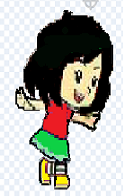Placeholder
ANITA
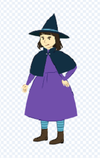Placeholder
BRUJA MALVADA
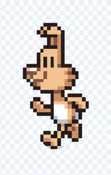Placeholder
MASCOTA
PERSONAJES SECUNDARIOS
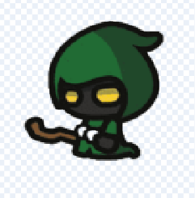Placeholder
EL DUENDE SUM
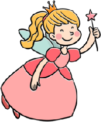Placeholder
EL HADA REST
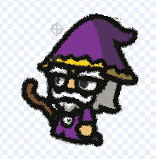Placeholder
EL MAGO MULT
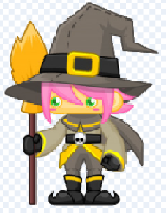Placeholder
EL GUARDIAN DE LA BRUJA-DIV
PERSONAJES DE OBSTACULO
CONEJOS
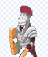Placeholder
GLADIADOR
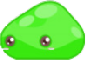Placeholder
MIRMOS
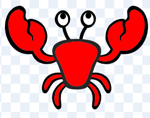Placeholder
CANGREJOS
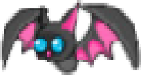Placeholder